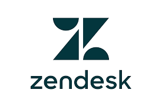

Consultoria Zendesk
Implemente, otimize e automatize o Zendesk para encantar clientes, aumentar vendas e transformar o suporte da sua empresa.
Quero atendimento de excelênciaO que oferecemos com Zendesk

Implantação Ágil
Coloque o Zendesk em operação rapidamente, com integrações e fluxos sob medida para o seu negócio.
Automação de Tickets
Automatize tarefas repetitivas, direcione tickets e reduza o tempo de resposta com inteligência e regras personalizadas.
Relatórios e Insights
Tenha dados completos sobre atendimento, satisfação e performance para decisões estratégicas.
Treinamento e Suporte
Capacitação do seu time para extrair o máximo do Zendesk, além de suporte dedicado e acompanhamento.
Resultados Reais
"A Ziro otimizou todo nosso atendimento com Zendesk. Hoje, resolvemos chamados muito mais rápido e nossos clientes estão mais satisfeitos!"
— Cliente do setor de tecnologia
Vamos conversar?
Fale agora mesmo no WhatsApp e receba um diagnóstico gratuito para sua empresa.
Falar no WhatsApp